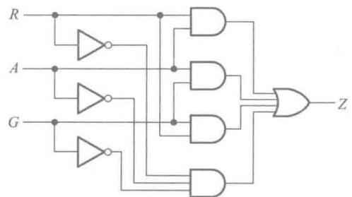

C01 · 4.3.3
例4.3.1逻辑图之一
SIM_OK RENDER_OK SELF_OK
课本原图

IR 摘要
inputs: R, A, G outputs: Z←Z gates: nR NOT(R) nA NOT(A) nG NOT(G) t1 AND(R,A) t2 AND(A,G) t3 AND(R,G) t4 AND(nR,nA,nG) Z OR(t1,t2,t3,t4) notes: 课本：t4 三输入与、Z 四输入或；Z=RA+AG+RG+R'A'G'
netlistsvg 自动布线
仿真（真值表抽样）
| R | A | G | Z |
|---|---|---|---|
| 0 | 0 | 0 | 1 |
| 0 | 0 | 1 | 0 |
| 0 | 1 | 0 | 0 |
| 0 | 1 | 1 | 1 |
| 1 | 0 | 0 | 0 |
| 1 | 0 | 1 | 1 |
| 1 | 1 | 0 | 1 |
| 1 | 1 | 1 | 1 |
✓ SIM: rows=8 ✓ SYMBOL_MULTI: multi_gates=2 ✓ CELL_COUNT: cells=8 ir_gates=8 ✓ RENDER_SVG: bytes=7845 ✓ PEER_EQ: eq_C02 rows=8 ✓ EVAL_SMOKE: ok
课本：t4 三输入与、Z 四输入或；Z=RA+AG+RG+R'A'G'